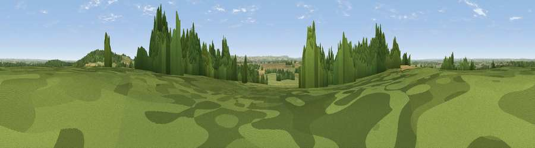

Coleshill
#24992 in England · top 35% of its area beats it · near ColeshillThe view, rendered

A 360° render of this exact spot computed from the terrain model, tree cover and land cover — summer colours, afternoon light, calibrated against photographs of famous viewpoints. Real trees, hedges and buildings will differ in detail.
The panorama
Grey silhouette: terrain skyline in each direction (720 bearings, Earth curvature and refraction included). Dashed green: skyline with trees (+15 m) and buildings (+8 m) as obstacles. Blue strip: how far the ground is visible on each bearing.
Where the view opens
Wedge length = distance to the farthest visible ground on that bearing (vegetation-aware). Rings at 10, 25 and 50 km.
What fills the view
35% grassland · 32% woodland · 31% cropland · 2% built-up
Angular shares of the visible panorama (visual magnitude), not map area. Landscape diversity 0.51 (0–1 Shannon).
Key numbers
More beautiful places nearby
The staircase of upgrades: each row has a higher view potential than everything closer. Driving times are estimates from straight-line distance, calibrated against real road routing — check an actual route before setting out.
| Place | Direction | Drive | Score |
|---|---|---|---|
| Viewpoint near Coleshill | W · 0 km | ~1 min | 54.9 |
| Badbury Hill | ENE · 2 km | ~5 min | 57.4 |
| Folly Hill | ENE · 6 km | ~12 min | 69.5 |
| Viewpoint near Woolstone | SE · 9 km | ~18 min | 76.7 |
| Martinsell viewpoint | SSW · 31 km | ~48 min | 77.3 |
| Viewpoint near Leckhampton | NW · 38 km | ~57 min | 77.8 |
| Viewpoint near Great Witcombe | WNW · 41 km | ~60 min | 80.5 |
| Nottingham Hill | NW · 43 km | ~63 min | 80.9 |
51.64429, -1.65091 · source: osm peak · position refined by local search. Computed location — check access rights before visiting.